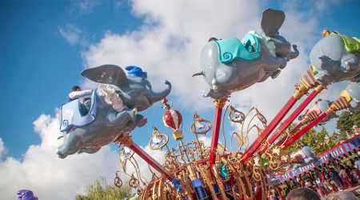

Disneyland Secrets


One of the best ways to maximize the amount of rides you go on is to go ride when the park opens. Most days, Disneyland opens at 8:00 a.m. so it's best to get there at 7:30 a.m. so you can get a spot on Main Street when the rope drops. If you are with younger children, go to Fantasyland and Toon Town as most ride wait times will be 5 minutes.
If you're going to Disneyland at night, the best time to go on rides is during parades, Fantastmic, and the fireworks. Most families decide to watch these events so more riding time for you!
If you're deciding which day to go on, Wednesdays are the best days during the week and Sunday mornings for the weekend. Avoid holiday weekends at all costs as most people want to spend their time at the Merriest Place on Earth! Who can blame them?
If you don't want to use Disney's Maxpass, here are the rides that you want to get a Fastpass first:
Going to Disneyland as an adult with my husband is a totally different experience than going as a family with my parents or with my 2 year-old niece. If you have children that are 4 years old or younger, here are the lands that are age appropriate:
If you have children that are 5 years old to 10 years old, here are the lands and rides in those lands that are age appropriate: